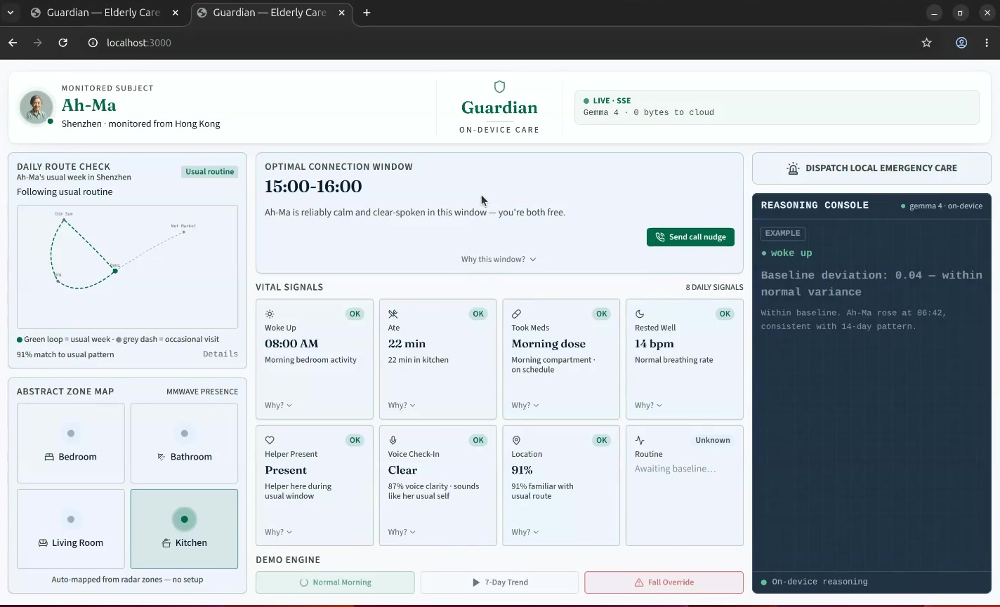
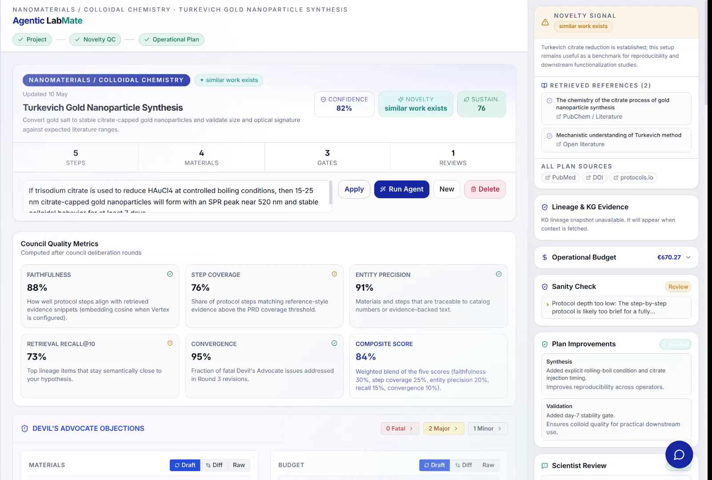

Tanmay Narang
CS student at TUM. HiWi at Fraunhofer AISEC, building MCP tooling that lets LLMs query and reason over Code Property Graphs — structural, deterministic representations of code (AST, control flow, data flow), not just text. Outside of that I build things and enter them into hackathons — most of the time they end when the hackathon does. One didn't.
TUM
Technical University of MunichFraunhofer AISEC
Static analysis on CPG and Codyzeh4tum e.V.
TUM's student CTF and security club
GUARDIAN
Camera- and cloud-free monitoring: translates passive mmWave radar data into eight daily signals for caregivers, with drift detection (cosine similarity over sqlite-vec) and a prioritized fall-detection interrupt under 10 seconds. Inference runs fully on-device on Ollama/Gemma 4.
- Passive mmWave radar signal processing
- Local Gemma inference — zero bytes to the cloud
- Past the hackathon now: structured interviews, feasibility review with a hardware advisor
The Systems

Company Brain
RAG knowledge-graph system (Neo4j) for SIX Financial that captures tacit regulatory knowledge. A recursive "teach the brain" loop distills customer conversations into permanent graph entries.

ProxyEngine
Executive-pay benchmarking pipeline, shipped as "PayAudit," built on ORBIS data. Peer-clustering (K=7) groups comparable firms for the pay comparison.

The AI Scientist
Backend work on a 7-agent system (Team Agentic Labmate) that turns a hypothesis into a full experiment plan — protocol, budget, timeline, validation — grounded in a GraphRAG knowledge graph built from Semantic Scholar papers.
Alice Bob |----- X25519 Pubkey ---------->| |<---- X25519 Pubkey -----------| [DH Ratchet Init] [DH Ratchet Init] | | |--- Encrypted Msg (Chain #1) -->| |<-- Encrypted Msg (Chain #1) --|
P2P Secure Chat
End-to-end encrypted P2P chat in Go: Signal protocol (Double Ratchet, X25519), a custom TCP transport layer, mutex-based concurrency control.
Activities & Research
01 / Research
HiWi at Fraunhofer AISEC — building MCP tooling that lets LLMs query and reason over Code Property Graphs for security analysis.
02 / Build
Hackathon-tested systems: pay-anomaly detection, graph-based knowledge retrieval, on-device elder-care sensing.
03 / Community
Member of h4tum e.V., TUM's CTF and IT-security student club.